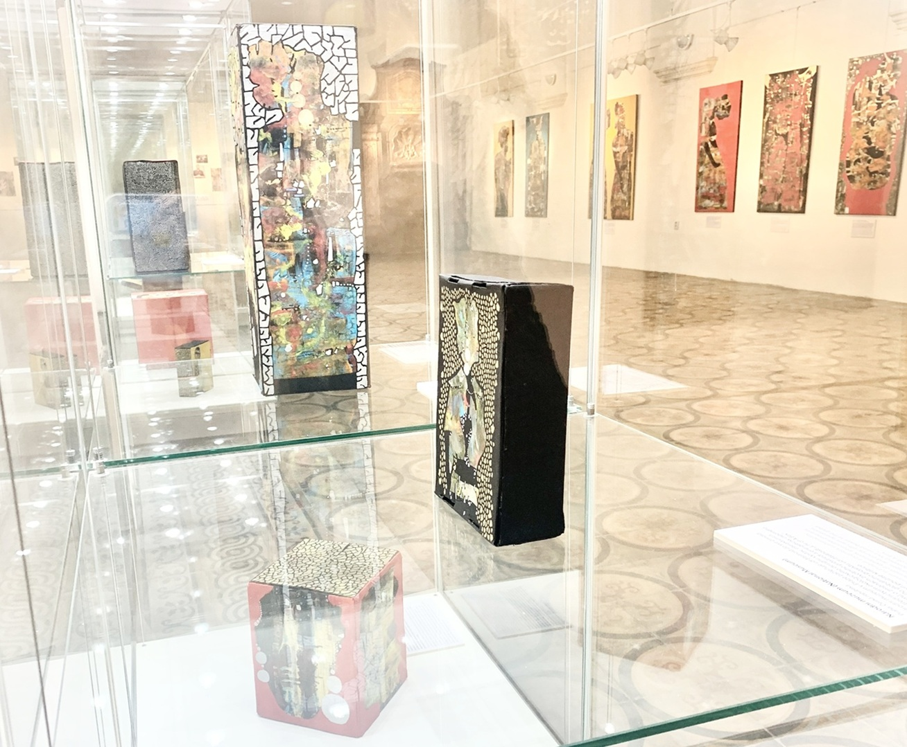
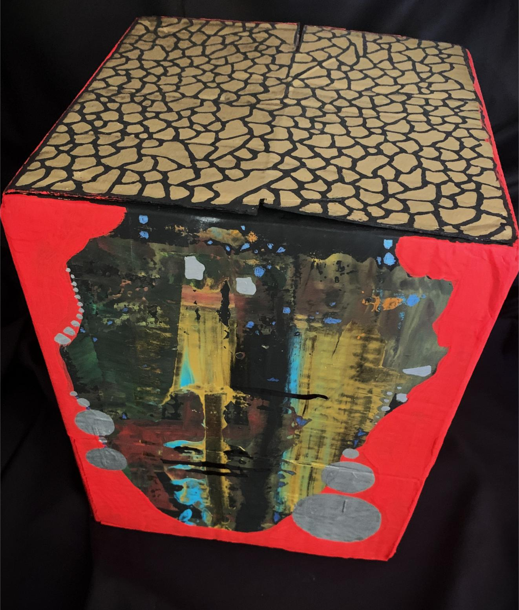
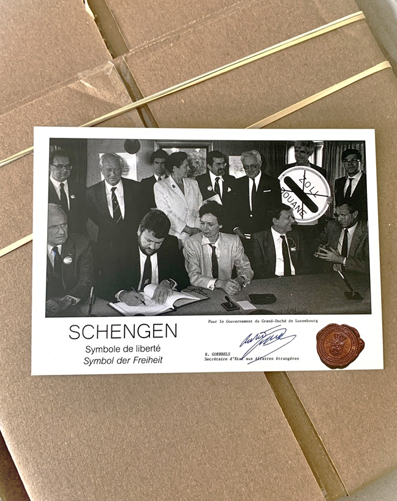
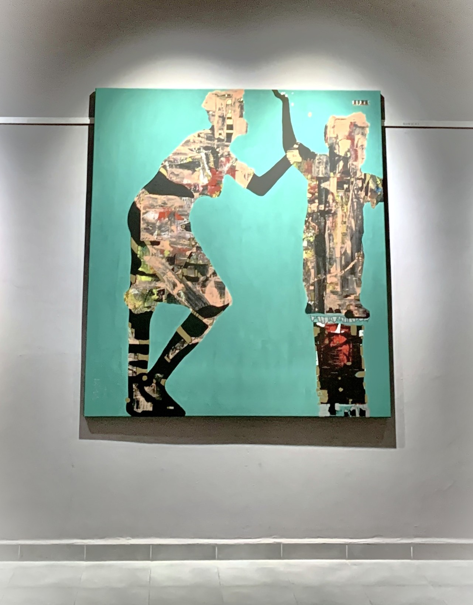
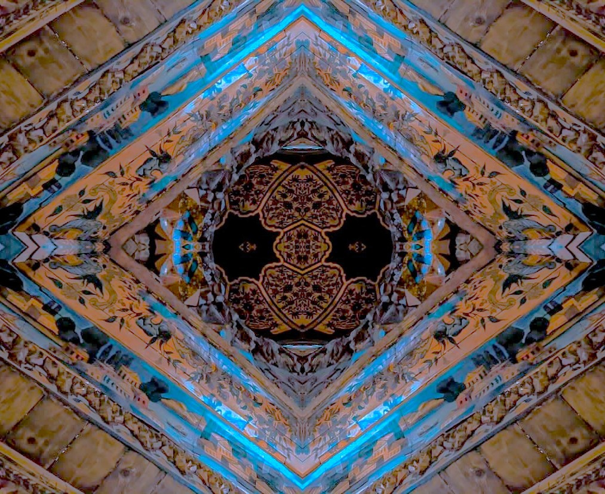
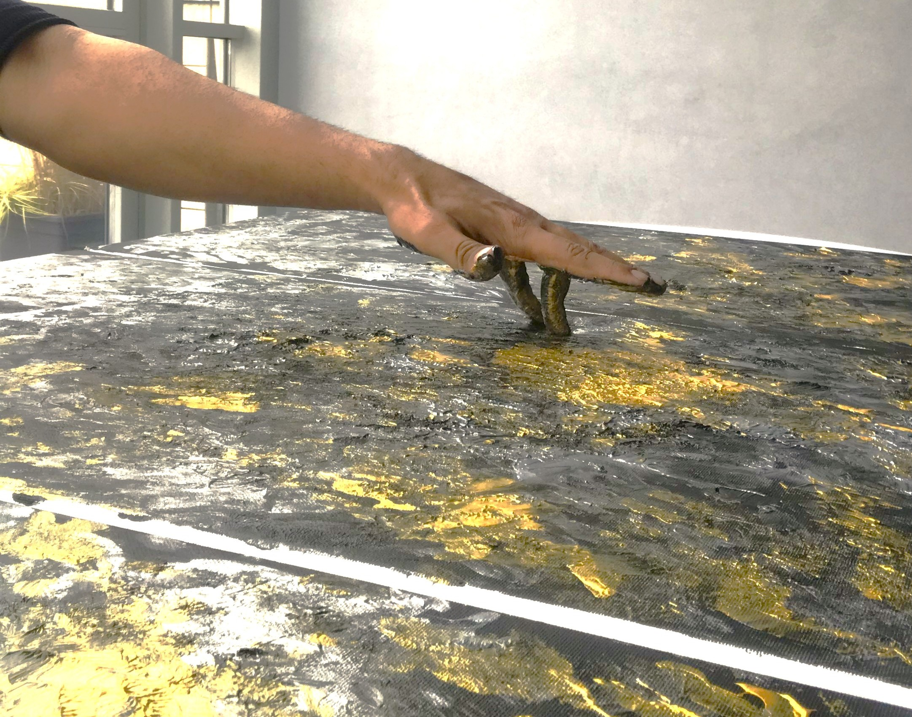
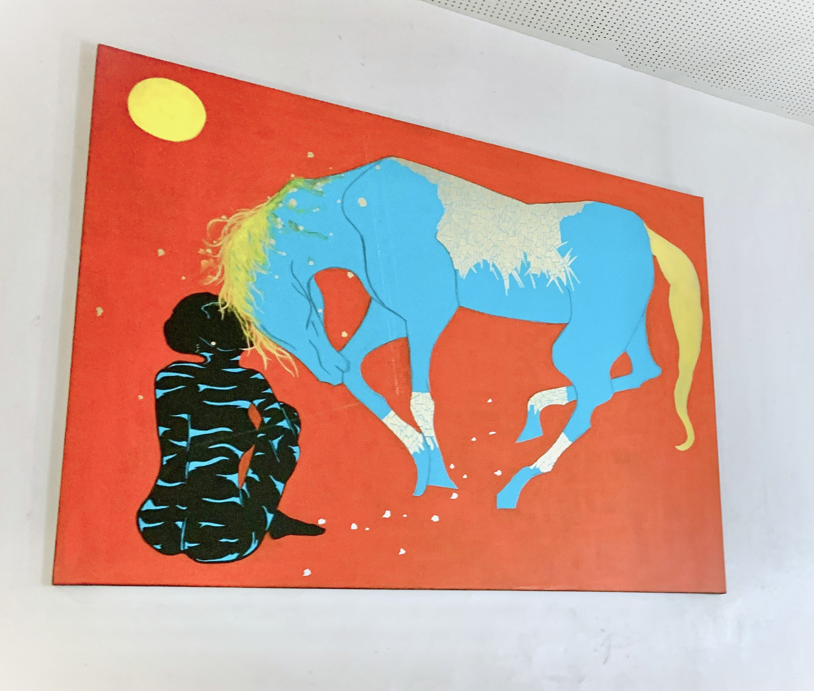
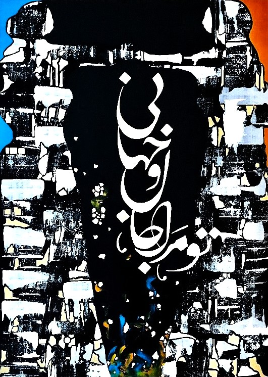
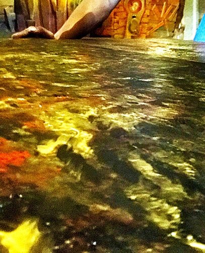

A global participatory text project capturing human sentiment, linguistic DNA, and philosophical thought across international borders.
Scope: Thousands of words donated so far, spanning Ivy League universities, global museums, indigenous councils, and cultural institutions.
• Explore Initiative
Life of a Box
A global sustainability initiative transforming discarded industrial logistics into monumental ecological sculptures, bridging recycling with fine art.
Participating Bodies: Nobel Prize Museum, Natural History Museum Zurich, National Museum of Denmark, Stockholm Resilience Centre, UNICEF & Red Cross.
• Explore Lineage
Voices of the Land
Bringing together sacred concepts, oral traditions, and linguistic heritage passed down through generations of indigenous guardians.
Linguistic DNA: Ojibwemowin (*Ankosé*), Cree (*sâkihitowin*), Kanien'kehá:ka (*Sakorihonnienni*), Cherokee (*Ama*).
• Explore Testimonies
روحنواز (Rooh-Nawaz)
Deeply moving testimonies of human resilience in words and images, honoring the global Persian community and collective historical memory.
Scholarly Contributors: Harvard, Columbia, Yale, Courtauld Institute, Göttingen, UT Austin, UC Davis, UC Irvine.
Spatial Chapter • Words
A Global Participatory Register of Human Sentiment
Global Project Words gathers thousands of single, spontaneous word contributions from world leaders, Nobel laureates, environmentalists, scientists, and cultural guardians across global networks of governance and heritage. Transformed into monumental abstract canvases, these donated words serve as raw linguistic energy—mapping the ongoing dialogue between contemporary global crisis, human endurance, and material memory.
Key Participating Networks & Academic Institutions (Click to Read Scope):
• Vernissage Address
Curatorial Opening
• Featured Masterwork
Equanimity / Gelassenheit
• Regional Gallery
City Gallery of Vysoké Mýto
• Read Monograph
I. Linguistic DNA & Global Energy
Extracting singular word donations from diverse cultures to map universal emotional and philosophical responses to modern planetary existence.
• Read Monograph
II. Participatory Architecture
Bypassing traditional art world gatekeeping by allowing global scholars, leaders, and communities to directly author the conceptual foundation of the canvas.
• Read Monograph
III. Monumental Preservation
Translating ephemeral text contributions into heavy, multi-layered pigment installations preserved for future cultural and historical documentation.
Spatial Chapter • Life of a Box
The Beauty of Sustainability & Global Recycling
Utilizing recycled cardboard boxes sourced from industrial supply chains across Germany, France, England, Norway, and the United States, Life of a Box is a flagship global sustainability initiative. Supported by environmental ministries and analyzed across major European media, it bridges ecological responsibility with monumental contemporary sculpture—proving that everyday discarded material holds profound cultural and aesthetic longevity.
Participating Donating Repositories & Institutional Contributors (Click to Read Statement):

• Museum Installation
Museum of West Bohemia

• Material Detail
from out of the blue studio gallery

• Institutional Record
European Schengen Museum
• Read Monograph
100+ Global Solo Retrospectives
Three decades of documented solo exhibitions across major international capitals—including Toronto, London, Athens, Prague, Brussels, Dubai, Oulu, Goa, and Poland.
• Read Monograph
Institutional & Private Collections
Monumental works held in permanent museum collections, state foundations, and prominent private collections worldwide.
• Read Monograph
3 Decades of Monographic Literature
A comprehensive history of critical essays, exhibition monographs, and scholarly reviews analyzing the evolution of Hesham Malik’s oeuvre.
Spatial Chapter • Voices of the Land
An Ancient Lineage of Living Wisdom
Honoring and preserving an ancient lineage of wisdom by thoughtfully sharing integral fragments of indigenous knowledge, sacred concepts, and oral philosophy with the global community. From Cree concepts of sâkihitowin (love as the bedrock of collective wellness) to Anishinaabemowin expressions of Ankosé ("everything is connected"), the project documents how living languages embody deep environmental and relational intelligence.
Institutional Repositories & Indigenous Scholars (Click to Read Donated Statement):

• Museum Installation
Museum of Jindřichův Hradec

• Material Detail
Museum Karlovy Vary

• Studio Documentation
Active Research & Creation
• Read Monograph
I. Relational Epistemology
Grounding fine art in indigenous worldviews where all life, territory, and living language are intrinsically linked—exemplified by concepts like Ankosé (everything is connected).
• Read Monograph
II. Social Capital & Well-being
Documenting sacred expressions of community wellness, relational duty, and mentorship—such as sâkihitowin (love) and Sakorihonnienni (one who teaches)—as foundational social infrastructure.
• Read Monograph
III. Land Custodianship & Earth Strength
Translating living environmental concepts—including Junggayi (traditional custodian), Ama (water), and Mashkiki (strength of the Earth)—into monumental visual heritage.
Spatial Chapter • روحنواز (Rooh-Nawaz)
Testimonies of Human Resilience
An artistic exploration of the global Persian diaspora, delving into a diverse array of responses towards challenging life circumstances. Anchored in concepts like bi-gharāri (the active rejection of intellectual stagnation) and Adab (ethical conduct and reverence), Rooh-Nawaz transforms personal memory and exile into monumental visual expressions.
Academic Faculties & Scholarly Collaborators (Click to Read Donated Concept):

• Private Exhibit
Rooh

• Museum Collection
Museum Kromeriz

• Studio Record
Rooh-Nawaz Creation
• Read Monograph
I. Epistemic Unsettledness & Exile
Examining how concepts of movement and seeking—such as Bi-gharāri and Rahi—reframe displacement into a dynamic state of continuous intellectual and spiritual creation.
• Read Monograph
II. Cultural Convergence & Ethos
Documenting living Persianate virtues like Adab (reverence) and untranslatable expressions of shared spirit like Jān as foundational infrastructure for cross-cultural unity.
• Read Monograph
III. Spiritual & Historical Persistence
Translating endurance, historical courage, and non-dualistic oneness into monumental public canvases celebrating the timeless dignity of human resilience.
Institutional Repositories & Provenance Register
• National & State Museum Repositories
• National Museum of History of Ukraine (Kyiv): Institutional Project Record & Touring Collection
• Museum of Paper / Muzeum Papiernictwa (Poland): Inaugural Museum Retrospective & Monographic Publication Repository
• State & Regional Museum Network (Czech Republic): Regional Museum Exhibition Trajectory & Public Interventions
• Monumental Public & Architectural Interventions
• Amazon EU Headquarters (London / EU Flagship): Industrial Material Sustainability Installation
• Brussels Expo Architectural Pavilion (Belgium): European Ecological Sculpture Commission
• Academic & Educational Exhibition Residencies: Charles University (Prague), Seneca Polytechnic (Toronto), International School of Stockholm, and St. Peter's School Barcelona
• Academic & Research Collaborations
• Global Academic Research Networks: Harvard University, Oxford & Cambridge, Stanford, MIT, Princeton, Yale, and Columbia University
• Planetary & Human Rights Initiatives: Equal Justice Initiative (USA), Svalbard Global Seed Vault (Norway), Greenpeace International, and Jane Goodall Institute
• Specialized Institutional Repositories: Center for Mark Twain Studies (USA), The Hebrew University of Jerusalem, and Centre for European Policy Studies (Belgium)
Critical Discourse & Institutional Bibliography
INQ-2026-06 • Curatorial Inquiry
The Architecture of Crisis: Mapping Global Energy Through Linguistic Archives
The Museum of Contemporary Inquiry (TMOCI) • Curatorial Research Portal • Published June 2026
Museum Monograph • Official Catalogue
Life of a Box: Official State Museum Exhibition Monograph
Muzeum Papiernictwa Press • Duszniki-Zdrój, Poland